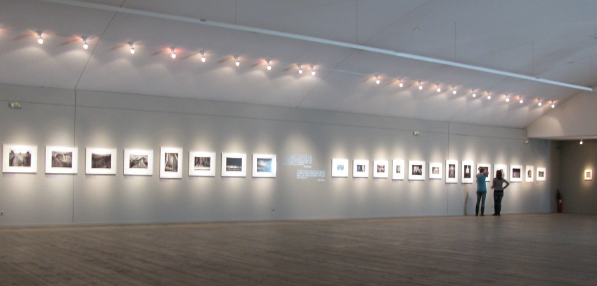
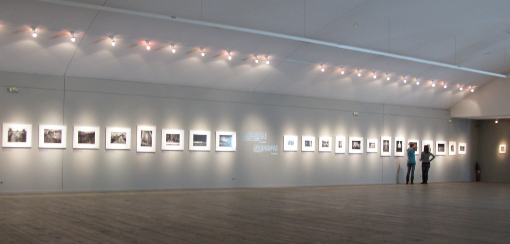
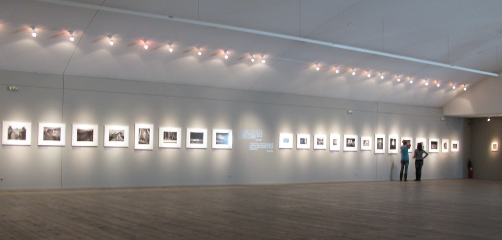
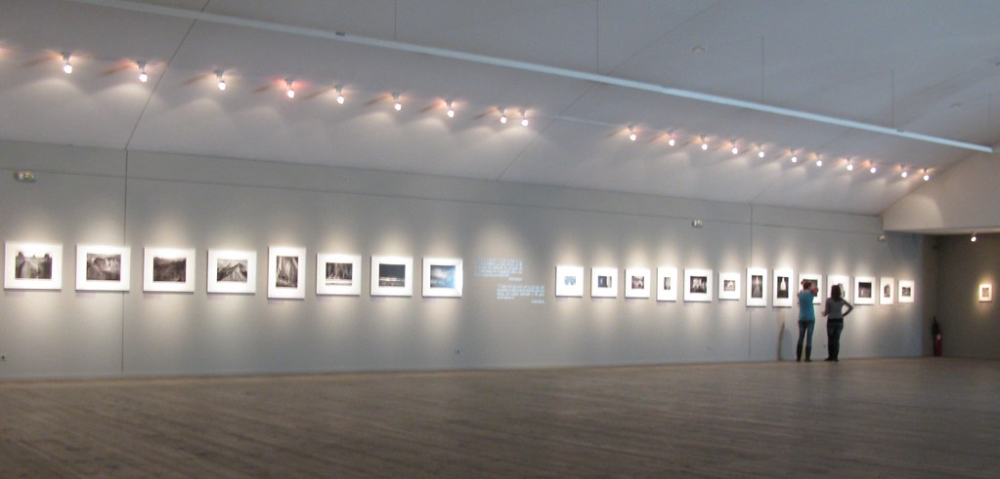

Το Μουσείο Μπενάκη ιδρύθηκε το 1930 στην Αθήνα με δωρεά του Αντώνη Μπενάκη προς το Ελληνικό Δημόσιο στη μνήμη του πατέρα του, Εμμανουήλ Μπενάκη, οπότε και στεγάστηκε στη νεοκλασική αρχοντική οικία της οικογένειας Μπενάκη. Θεωρείται ένας από τους κορυφαίους πολιτιστικούς οργανισμούς στην Ελλάδα με πάνω από 100.000 εκθέματα ελληνικής ιστορίας και πολιτισμού, ενώ από το 2000 οι συλλογές του διαχωρίστηκαν θεματικά με την χρήση περιφερειακών μουσείων.Είναι Ίδρυμα Ιδιωτικού Δικαίου και θεωρείται το παλαιότερος οργανισμός μουσείων στον ελληνικό χώρο.